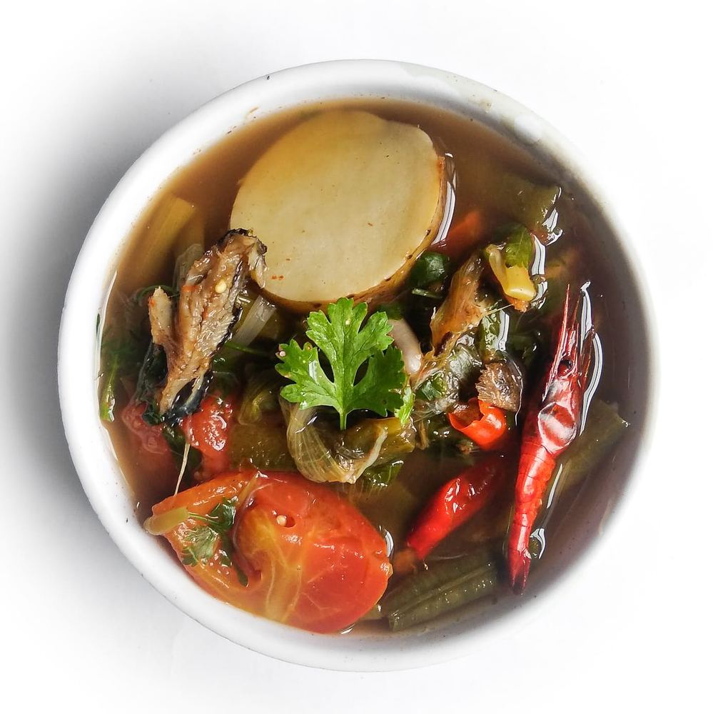
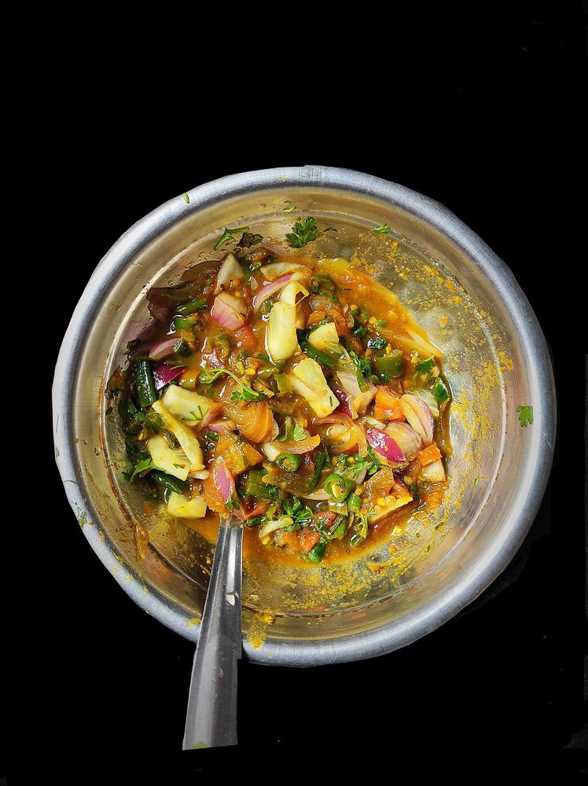
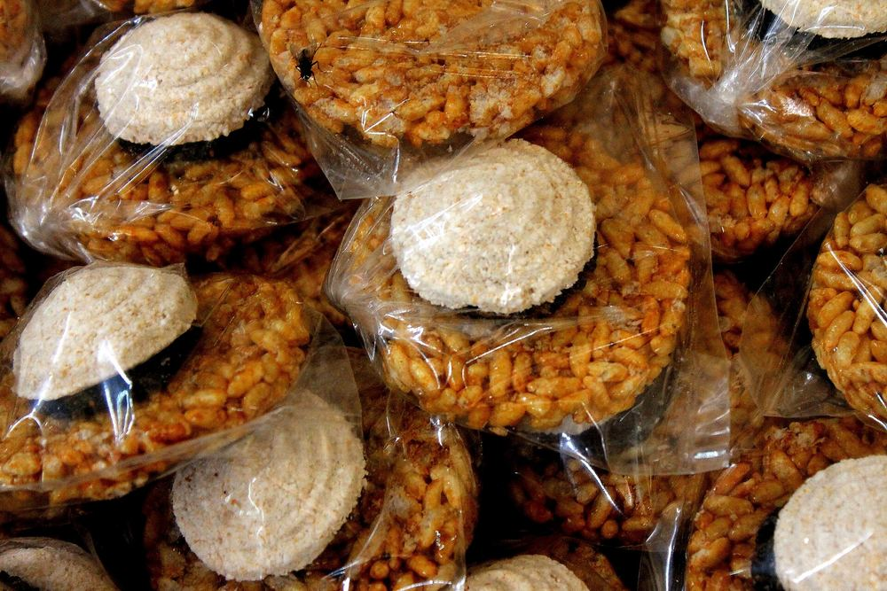
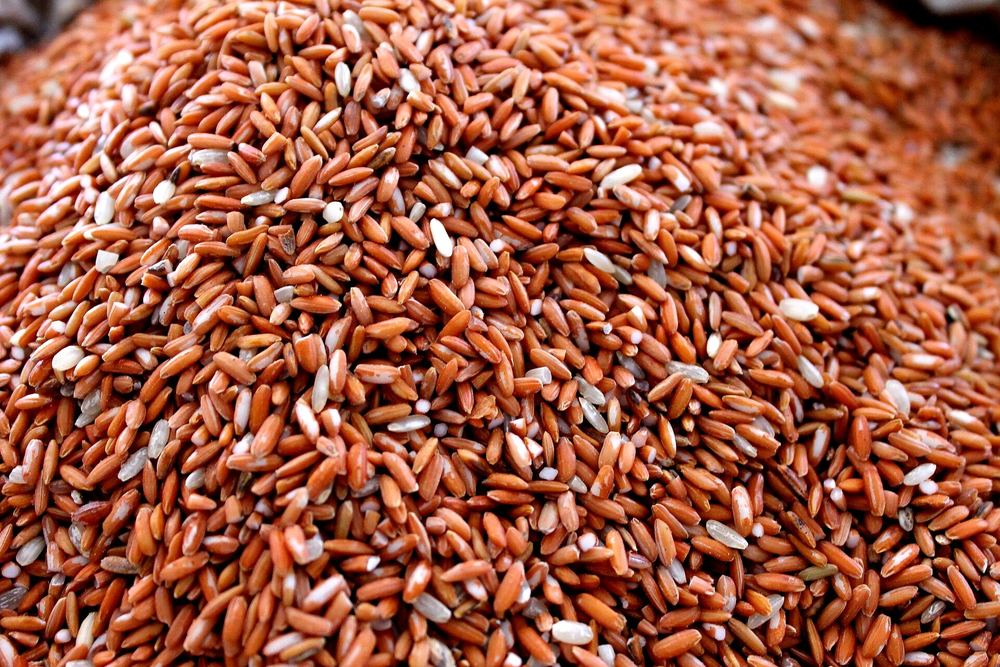
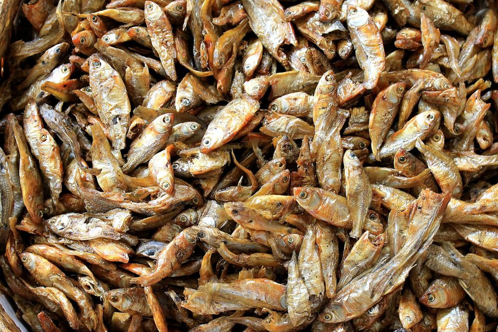

Lunch at Ima Keithel
Small canteens around the Mothers’ Market serve rice plates with eromba, kangshoi and fish at midday.
Rice at the centre, fermented fish for depth, king chilli for fire and a handful of herbs from the backyard. Meitei food is light, sharp and seasonal.

Meals are built from a few strong ingredients, boiled, roasted or fermented rather than fried, and eaten with plenty of rice.
The base of almost everything: fermented fish, roasted before use.
The fire: the king chilli, one of the hottest on earth.
The green: culantro, mint, lemon basil and more from the yard.
The grain for festivals: aromatic black rice.
Filter by what you eat. Ask for less chilli if you need to: “morok kharaktani” means just a little chilli.

Boiled vegetables and potatoes mashed with roasted ngari (fermented fish) and king chilli. The taste of home for every Meitei.

A cold, crunchy salad of lotus stem, cabbage, banana flower and herbs, dressed with roasted chickpea flour and chilli.

A light stew of seasonal greens, often with a little dried fish. Eaten with rice at almost every meal.

A fierce relish of roasted chilli, onion, herbs and ngari. A spoonful wakes up any plate.

Freshwater fish from Loktak, fried or roasted until crisp and eaten whole.

Black rice simmered slowly in milk with sugar until deep purple. The pride of every festival table.

Puffed and sticky rice made into cakes and balls, sold by the bag at Ima Keithel.

Manipur grows many rices, including chak-hao, an aromatic black rice with a Geographical Indication tag.

Fermented and dried fish give Manipuri food its deep, savoury base. Look for them in every market.
A simple version of Manipur’s favourite salad. Serves four.
Home cooking is the real thing. These are the easiest ways to find it.
Small canteens around the Mothers’ Market serve rice plates with eromba, kangshoi and fish at midday.
At Loktak and in Ukhrul your host will usually cook; tell them early how much chilli you can take.
The Sangai Festival food stalls are the easiest way to taste dishes from every community in one evening.
Black rice, dried ngari and roasted chilli travel well. Buy them from the market, not the airport.